Auto-Fill
The fastest and most effective way to define pledges is to use Auto-Fill. Auto-Fill imports all of the vehicle’s valid avails and allows you to quickly and accurately create the pledges based on the affiliate contract.
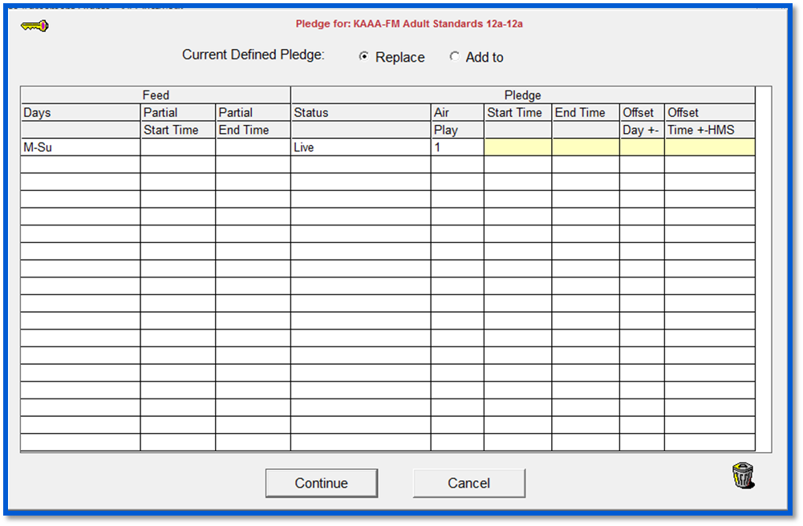
Mouse click on the Key icon in the upper left corner of the Auto-Fill screen to see an explanation of the different Auto-Fill fields.
To remove a line from the Auto-Fill screen, click on the line then click the trash can icon in the lower right corner of the screen.
Using Auto-Fill When Carrying all Avails Live
If the affiliate is carrying each avail Live (at the time that it is fed), from the Pledge tab, click the Auto-Fill button and you will be taken to the Auto-Fill screen. On this screen, you will see the days of the week, the Status of the pledge as Live, and Air Plays as 1 (meaning each spot airs once).
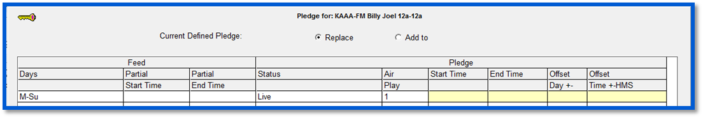
Since this agreement is airing entirely Live, simply click Continue. This will return you to the Pledge screen, with all the pledges automatically created and defined as Live.
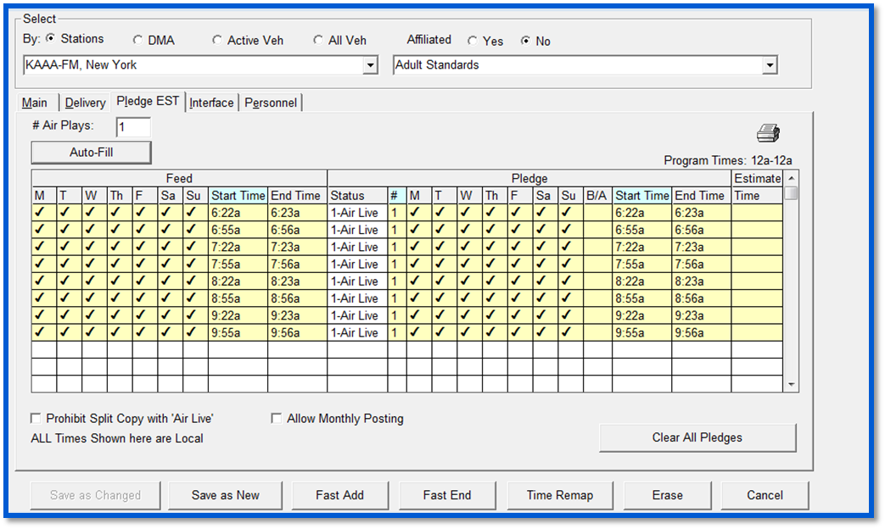
Click “Save as New” to save the new agreement.
Using Auto-Fill With Delayed Air Times/Days
The Auto-Fill button can also be used to create delayed pledges that do not air live, for example for “ROS” pledges that are only required to air within a specified date and time range.
To create an agreement with ROS or delayed pledges, press the Auto-Fill button, then set the status field to “Delay”. Tab to the Pledge Start Time field on the Auto-Fill screen and enter the start time of the ROS daypart. Enter the end time of the ROS daypart in the Pledge End Time field, then tab to the end of the line and press Continue.
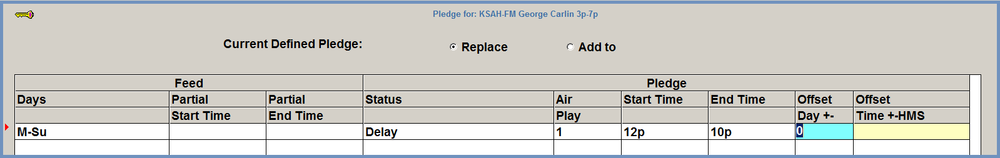
Back on the Pledge tab, the delayed pledges will have been created.
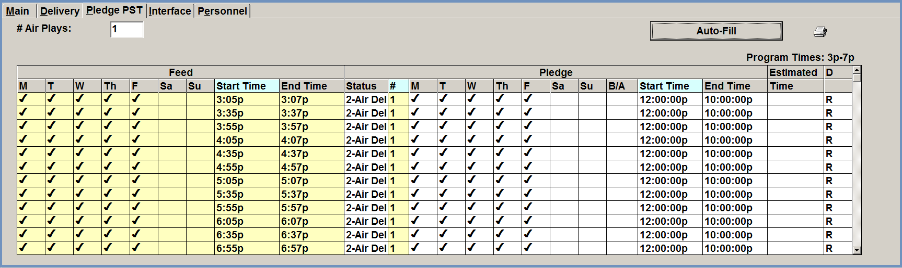
At this point the agreement can be saved by pressing “Save as New”, or if Estimated Times are used, they can be entered in the Estimate Time field then the agreement can be saved.
Additional Auto-Fill Features
This section describes some of the other pledges that can be defined on Auto-Fill screen.
Compact Days
When Compact Days is selected from the Days field of the Auto-Fill screen and used to create pledges, all matching times that are fed on different days will appear on one line per avail time on the Pledge screen.
Breakout Days
By contrast, if the affiliate is airing different avails at different times/days, mouse click on the Days toggle once to change the toggle from “Compact Days” to “Breakout Days”.
When pressing Continue, each avail is shown separately for each day. This will allow you to adjust individual avails as needed by changing the status “1-Air Live” to “2-Air Delay”, then selecting the days and times your affiliate will air each spot in the Pledge boxes.
The picture below shows pledges created with “Breakout Days”. The 6:46p fed avail is broken out separately onto different days of the week.
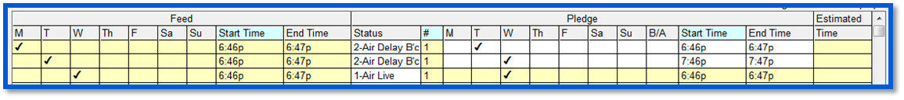
Saving a Pledge with a Not Carried Status
If an avail is not carried by the affiliate, set the Status field to “9-Not Carried”. This will prevent the spots from that avail from being exported to the web log/affidavit.
If all the pledges for a single agreement are set to “9-Not Carried”, when saving the agreement, a warning message will appear that warns that all the pledges are set to Status 9. Press Yes to continue saving.
Common Pledge Scenarios
Below are some common pledge scenarios that Auto-Fill can be used to configure.
Changing the Days that Spots Will Air
In this example, there is a vehicle that airs on Saturday and Sunday, but the Affiliate is only airing Saturday and not carrying the Sunday spots. In Auto-Fill, select the Days field and clear the days by clicking “Clr”. Select “Sa” only, tab and click “Continue”.
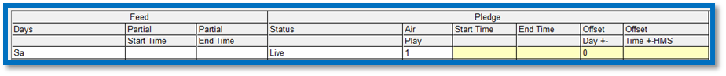
The Saturday spots will appear with a Status 1 Air-Live, and Sunday spots will all be set to Status 9 Not-Carried.
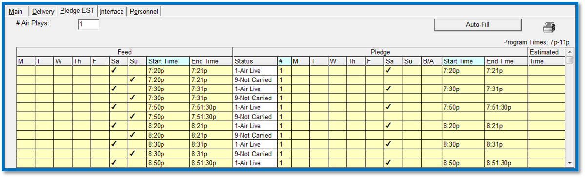
Fed and Pledged Offset Days
Affiliates can pledge to air avails on days different from those on which they were fed.
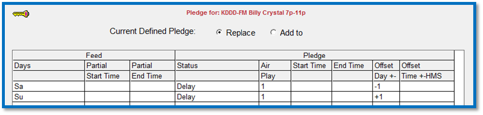
This example shows a program that is fed on Saturday and Sunday. Saturday’s programming is pledged to air on Friday, and Sunday’s is pledged to air on Monday. This is handled easily in Auto-Fill with the Days Offset feature.
In Auto-Fill, create a separate line for Saturday and Sunday and give each line a Delay Status. In the Offset Days +/- column, enter a -1 for the Saturday line, since it is to air on Friday, and a +1 for the Sunday line since it is air on Monday, then click Continue.
The result is a separate line for the fed Saturday and Sunday spots, which are Status 2 – Air Delay on Friday and Monday on the Pledge side. The B/A (Before or After) column indicates whether a spot is aired before or after its original fed day.
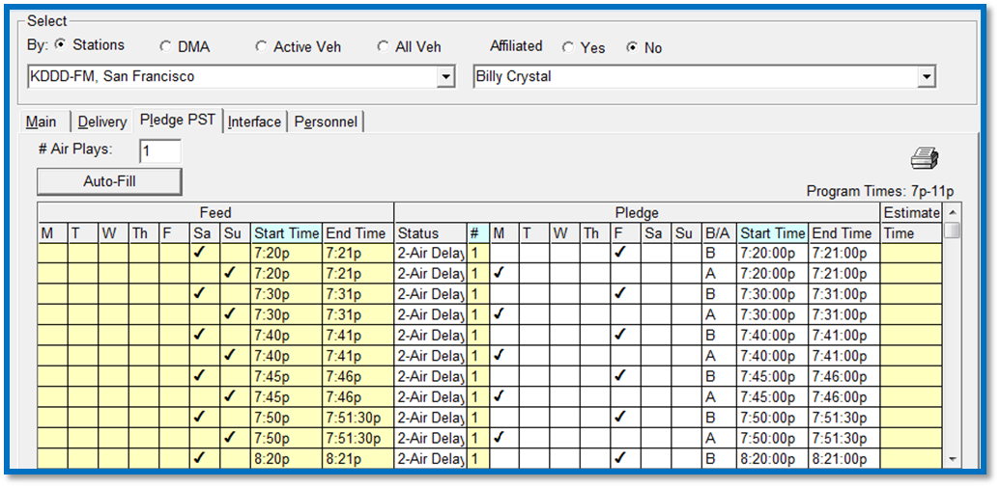
Time Delay Shift in Pledged Avails
This example features a live program that is aired 1 hour and 15 minutes after it is fed. Similar to the Offset Days feature, this pledge is handled with the Offset Time feature. In Auto-Fill, select the days (if applicable), enter a status of Delay, and adjust the times in the Offset Time +/- field. In this case, the times are adjusted by +1h15m.
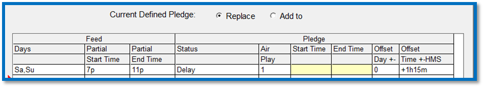
The result is an agreement in which the fed (live) times are automatically delayed and pledged to air 1 hour and 15 minutes later.
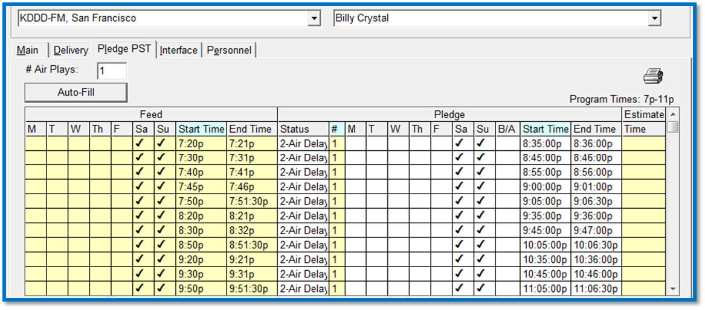
Partially Carried Programming
Sometimes affiliates only wish to air a portion of network programming. In this example, an affiliate agrees to carry only the last hour of a four hour program.
In Auto-Fill, tab past the Days field and enter the Feed Start and End times of only the hour the affiliate is agreeing to air. Set the Status to Delay, and enter the Pledge Start and End times during which the affiliate is agreeing to air the spots.
The result is a pledge in which the first three hours of the program are set to 9-Not Carried, and the last hour is pledged to be 2- Air Delay. The affiliate will only see the last hour of spots on the web log.
Mixture of Live and Delayed Avails
If you have an affiliate that carries certain days live and other days staggered or delayed, you can separate the days by their schedule in the Auto-Fill screen.
In this example, there’s an agreement in which Monday, Wednesday, and Friday air live, and Tuesday and Thursday air delayed. Click Auto-Fill, then press “Clr” in the Days field.
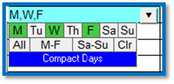
Click on M, W, F, and leave “Compact Days” on, then tab through to the next line until the Day box appears again in the next line.
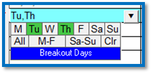
This time clear M-Su, and click on Tu and Th. then toggle to “Breakout Days” then tab to the end of the line.
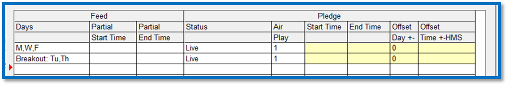
Click Continue and all avails for Monday, Wednesday and Friday are on one line that is Status 1- Air Live, and Tuesday and Thursday broken out separately as Status 2- Air Delay.
You are now free to make any necessary adjustments to the Tuesday and Thursday pledge times.
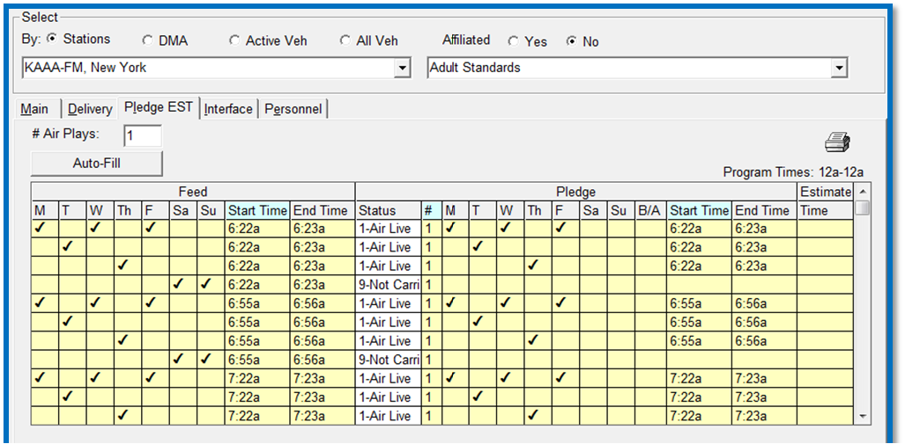
Multiple Air Plays
By default the system assumes that the affiliate will air each carried spot once. However, if you have an affiliate with an agreement that specifies that the station must air a spot multiple times, you can indicate this in the # Air Plays field on the Pledge screen. Increasing this value from 1 will cause multiple spots to appear on the affiliate web log. When using the # Air Plays feature, you must indicate when each additional spot will air in the Pledge screen.
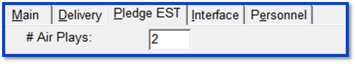
To define each Air Play line, go to the Auto-Fill Screen, and create a separate line for the number of Air Plays you defined, in this example, two. The Air Play column will create a value for the number of Air Plays you defined. Select each Air Play from the Air Play dropdown.
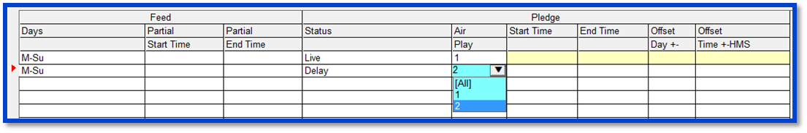
Alternatively, if all the different air plays will have the same status, simply select “All” from the Air Play dropdown on the Auto-Fill screen.
After clicking Continue, you will see lines created for each of the Air Play numbers. The pledge times for any delayed pledges can be entered at this time.
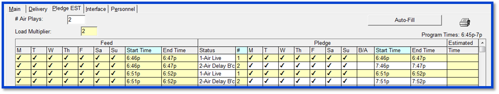